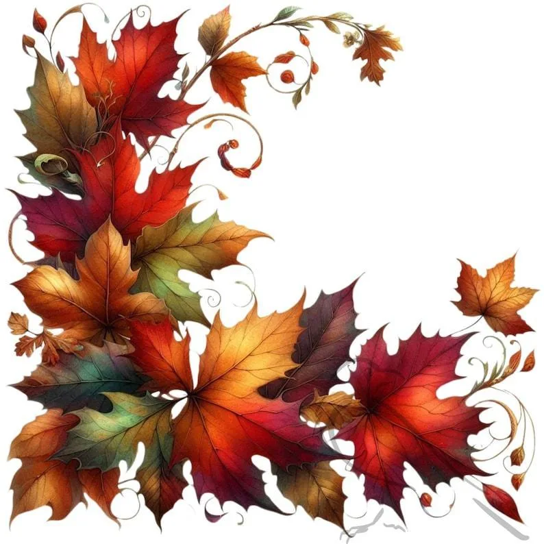
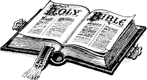
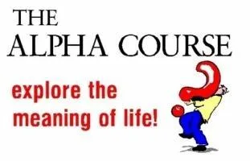
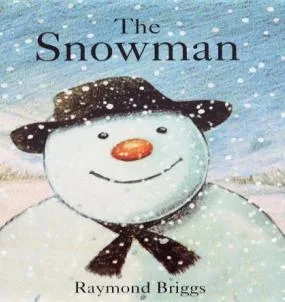
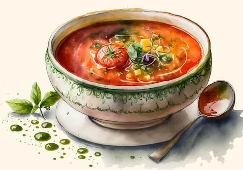
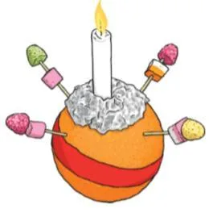
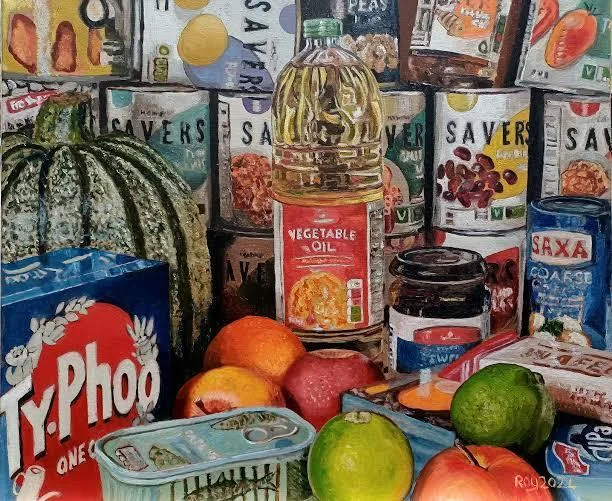
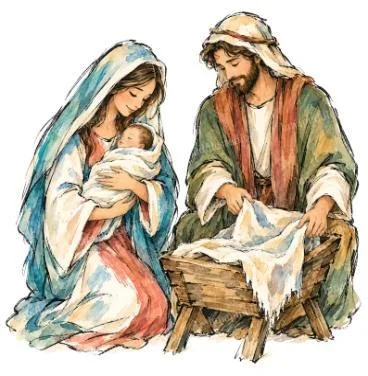

Pews News
All Saints’ Day

This Sunday
10am
Worship for All / Shoebox Sunday
St Michael’s Church
Today’s readings
Romans 16.15b–16 and 1 Corinthians 12.12–27
The Collect for today
God of holiness, your glory is proclaimed in every age: as we rejoice in the faith of your saints, inspire us to follow their example with boldness and joy, through Jesus Christ our Lord. Amen.
Join the service on Zoom
If you are zooming, please try and join at least five minutes before the service is due to start.
Meeting ID 812 6812 6840Passcode 221883
Join by telephone
Call any of these numbers to listen to the service. There will be a recorded message and you will be asked to enter the Meeting ID and then the Passcode.
The weeks ahead
Celebration of the life of Barry Moughton
Monday 2 November · 11.30am
There will be a service of celebration for the life of the late Barry Moughton at St Michael’s Church followed by a family Burial of Ashes in the churchyard. Al who knew Barry are welcome to join the family afterwards at The Running Horses. The service will be zoomed for those who would like to join virtually. The zoom code details are:
Join the celebration on ZoomMeeting ID 893 9609 9494Passcode 967011
Monday evening Bible study
Monday 2 November · 7.45pm until 9pm
The Monday evening Bible study group meets at Westhumble Chapel. Please contact Amanda on aewadsworth@hotmail.com if you would like more information about joining this group.

The Alpha course
Monday 2 November · 7.30pm (finishing by 9pm)
The Alpha course meets in The Ranmore Room (the vestry).

Compline
Tuesdays 3 and 24 November · 7pm
Please note later date. Compline in church. All are welcome to come along for a short service and period of reflection, prayer and fellowship.
Thursday morning Bible study
Thursday 5 November · 11am for 11.30am start until 12.30pm
The Thursday morning Bible Study group meets at Westhumble Chapel. If you would like to join this group, please email admin@micklehamchurch.org.uk or call Alison Wood on 01372 376443 or 07905 985928.
At a glance
Dates for your diary
Dates for your diary.
Open a notice for full details.
Saturday 7 November · 10am till 12 noon
Coffee and cake at the Chapel
Full details
Coffee and cake at the Chapel in Westhumble. Only £2 and free drinks for children. Do come along and bring a friend or neighbour. Offers of homemade cakes or help on the morning appreciated. Contact Jonathan Blake: 07787 126966.
Sunday 8 November · 10am
Remembrance Sunday
Full details
Service in church for Remembrance Sunday, with Act of Remembrance around the war memorial at 11am. Afterwards we have been kindly invited to have refreshments at RGS-Surrey Hills School. There will not be an 8am Communion service at the Chapel on this Sunday.
Sunday 8 November · 7pm
A Concert for Remembrance Sunday
Please note that the venue is incorrect in the magazine: the concert will be in St Michael’s Church not at the Village Hall
Full details
A Concert for Remembrance Sunday by Mickleham Choral Society in church. Tickets £15, children 12 years and under £7.50. Book tickets via Events page on www.micklehamchoral.org.uk. More information on page 6 of the October Parish Magazine.
Tuesday 10 November · 7.30pm
PCC meeting
Full details
The PCC meets in the Ranmore Room.
Sunday 15 November · 4pm
Lights to Remember
Full details
Lights to Remember service in church, when we will remember our loved ones who we have lost. See invitation attached to covering email.
Tuesday 17 November · 7.30pm
Ascending Deeper
Full details
Ascending Deeper evening on the topic of What does the Bible say about Migration? Please let Sandra know if you wish to come or want any information.

Sunday 22 November · 4pm
Children’s Christmas Concert: The Snowman
Please note that the Christingle Craft Workshop and Family Service will be on Sunday, 6th December.
Full details
There is a Children’s Christmas Concert ‘The Snowman’ in church followed by the lighting of the Christmas Trees outside the church and refreshments provided by the Church Community Group. There will be more information in the November Parish Magazine.

Thursday 26 November · 12.45 for 1pm
Autumn Soup Lunch
Full details
Autumn Soup Lunch in Mickleham Village Hall. Please make a note in your diaries of this remaining date for these popular lunches. Delicious homemade soups, bread and cheese and good company. No charge but donations gratefully received, with all proceeds going to local charities (including the Foodbank).
To help with numbers, please book your place with Andy Diamond by calling 07789 775354 or email him at adiamond714@gmail.com, or sign the list at the back of the church.

Sunday 6 December
Christingle Craft Workshop and Family Service
Full details
Please note that the Christingle Craft Workshop and Family Service will be on Sunday, 6th December.
Caring for our neighbours
News from the Food Bank

Thank you so much for your continued kindness and support. Here are some suggested items that are needed this week:
- Long Life Milk
- Long Life Fruit Juice
- Meat Meals for 1 (Frays pies, tinned spaghetti bolognese, beans and sausage etc)
- Muesli/Cereal Bars
- Toothbrushes (adults)
- Squash
You can also drop donations off in Church on Sunday morning, at the monthly Chapel Coffee morning (10am to 12noon) at The Stepping Stones, or at any time at any of the usual locations in Mickleham and Westhumble, details in the Parish Magazine.

The Nativity Journey at Wintershall — 15th to 20th December 2026
If you have never been to the Wintershall Nativity you may be interested in finding out more about the event. Wintershall is a private estate near Godalming which hosts a re-enactment of the Nativity story.
Attendees can discover the true meaning of Christmas with an unforgettable immersive event for all the family. They stand with the shepherds, walk with Mary, Joseph and the donkey, journey with Roman soldiers and enter the stable to watch the miracle unfold. See the flyer attached to covering email.
Tickets can be booked here: https://www.wintershall.org.uk/event/the-nativity-journey/
A short introductory video is available here: https://youtu.be/xoAFCjrJC88?si=ocGQrvQq3dylr5CN